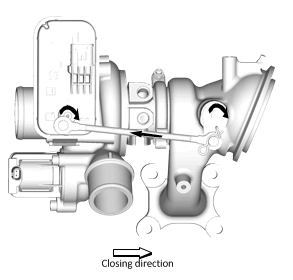
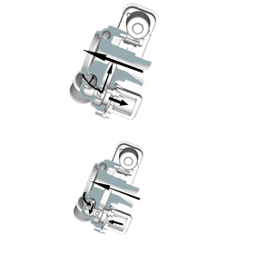

涡轮增压器系统的说明
涡轮增压器的说明与操作
涡轮增压器是一种压缩机，通过增加进入发动机的氧质量及相应的燃油量，从而增加发动机的功率输出。单涡旋式涡轮增压器安装在排气歧管上或直接安装至气缸盖。涡轮由排气流产生的能量进行驱动。涡轮通过一条轴连接至压缩机，压缩机安装在发动机的进气系统中。离心压缩机叶片将进气压缩至大气压力以上，从而增加了进入发动机的空气密度。
涡轮增压器包括一个由发动机控制模块通过电子执行器（E-WGA）控制的废气旁通阀，用于控制增压压力。涡轮增压器进气旁通阀（E-CRV）由发动机控制模块进行控制，用于避免由于节气门突然关闭而造成压缩机喘振或损坏。进气旁通阀在节气门关闭的情况下打开，使空气再循环至涡轮增压器压缩机入口。
涡轮增压器通过供油排油管连接到发动机润滑系统。机油用于维持轴承系统功能，也用于带走涡轮增压器产生的部分热量。涡轮增压器内具有冷却水路系统，用于降低轴承系统工作温度，并在停机时通过虹吸原理降低涡轮增压器的轴承系统热量。
电子执行器
电子执行器控制排气泄压阀打开和关闭增压器的旁通流道。用于控制增压压力。通过电子执行器的电机输出力，驱动推杆移动，打开排气泄压阀到相应角度。发动机控制模块通过改变执行器的目标位置信号来改变排气泄压阀的开度，从而调节涡轮转速。
在低负载时，排气泄压阀关闭。然后，所有废气通过涡轮。在高负载时，废气量更大，使涡轮旋转更快。这就向发动机提供了更大的排气质量流量。
当排气质量流量过大，导致发动机超增压，需要通过调节排气泄压阀使部分废气旁通掉，不驱动涡轮，涡轮速度被调节，从而使涡轮排气质量流量正确。
当设置了某些DTC时，发动机控制模块将限制增压程度。发动机控制模块通过控制电子执行器并将阀门位置信号设定为全开，来限制增压。

进气旁通电磁阀（压缩机再循环阀）
涡轮增压器进气旁通阀用于避免涡轮在低流量和高压时超出压缩机喘振限制。这种情况会在发动机带负载运行，同时节气门突然关闭时发生。在这种情况下，流量几乎为零，同时压力非常高。这不仅会损坏涡轮增压器，而且还会产生噪声并减慢涡轮速度。发动机控制模块向电磁阀输出驱动器提供电压信号来调节打开或关闭阀门的位置。

加速踏板压下
旁通阀闭合。安装在阀门中的回位弹簧力挤压阀锥，将阀座压入涡轮壳体中。阀门关闭。
松开加速踏板
为了避免进气歧管中的压力峰值并使涡轮卸荷或超限，发动机控制模块将向旁通阀发送电压信号，然后该阀门打开。涡轮压力侧的压缩空气通过打开的阀门进入进气管。当压力下降时，涡轮速度可以保持相对较高，同时防止涡轮增压器超出压缩机喘振限制。
增压空气冷却器
涡轮增压器进气系统由空气－空气增压空气冷却器系统提供支持，该系统将新鲜空气吸入热交换器以降低涡轮压缩机排出的热压缩空气的温度，然后再输送给发动机燃烧系统。进气温度可以降低达100°C (180°F)，从而提高性能。这是由空气冷却后氧气密度增大，从而改善了燃烧状况。增压空气冷却器由需要使用专用高扭矩固定卡箍的柔性管件连接至涡轮增压器和节气门体上。在进行管道维修作业时，为了防止任何类型的空气泄漏的情况，紧固规格、清洁度和正确的卡箍定位就显得至关重要，因此必须严格遵守。